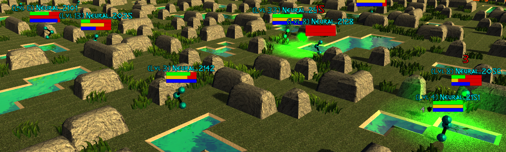

 User API¶
User API¶
High-Level Features:
An OpenAI Gym style Realm (environment) API for creating and interacting with Neural MMO instances. We deviate slightly from the prototypical Gym API in order to support large and variable numbers of agents. Our Realm API does not directly depend on RLlib, but our modifications their multiagent environment conventions in order to enable native compatibility.
Configuration options for customizing and toggling varous features of the environment
Various tools and hooks for analyzing policies and visualizing agent learning directly in the Unity3D client
API Reference:
Developer API¶
The doctree below contains automatically generated documentation for the entire project. This is not intended for typical users but is a useful reference for Neural MMO developers and contributors. We are currently working on a more thorough Developer Guide. In the meanwhile, here are a few tips and gotchas for folks looking to get involved:
Before you do anything else, join the Discord to discuss what parts of the project you are interested in contributing to. It is possible that the feature you’d like to build is already in development or that we have a subsystem you can work off of.
Only functions with docstrings are displayed by default; always refer to the source for internal functions. At current scale, we focus on concise, self-documenting code outside of the User API. That said, the self that wrote the code is not always the best at determining what is self-documenting. Let me know if you find anything confusing – it probably needs reworking.
Not all of the files below are in use. In particular, several game systems, such as items+inventory, were prototyped early on in development but have been put on hold in order to prioritize models/infrastructure. That said, if you are looking for environment-side features to work on, these are good candidates.
- projekt package
- forge package
- forge.blade package
- forge.blade.core package
- forge.blade.entity package
- forge.blade.hook package
- forge.blade.io package
- forge.blade.item package
- forge.blade.lib package
- forge.blade.systems package
- forge.blade.systems.visualizer namespace
- forge.blade.systems.ai module
- forge.blade.systems.combat module
- forge.blade.systems.droptable module
- forge.blade.systems.equipment module
- forge.blade.systems.exchange module
- forge.blade.systems.experience module
- forge.blade.systems.inventory module
- forge.blade.systems.recipe module
- forge.blade.systems.skill module
- forge.ethyr package
- forge.trinity package
- forge.blade package